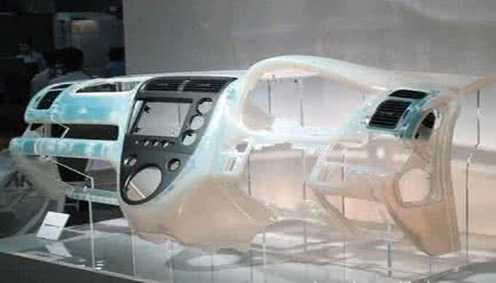

现代社会中，交通运输发展水平是衡量一个国家和地区文明、开放程度的重要标志。而交通运输不仅指代了人出行的方式，而且包含了产品、生产资料等物的运输和流通。在信息化、智能化技术高速发展的今天，如何在物流领域充分利用数字信息技术?怎样推动物流运输管理、调度的现代化?北京交通大学交通运输学院物流工程系系主任王喜富教授，用三十年的不懈探索给出了答案。
1963年出生的王喜富教授是内蒙古赤峰人，现任北京交通大学物流工程系系主任，曾担任系统工程与控制研究所所长，主要从事物流工程、系统工程、交通运输规划与管理等领域的教学与科研工作。从1985年大学毕业后进入中国矿业大学能源科学与工程学院工作以来，他与物流运输结下的不解之缘已经超过了三十年。
王教授介绍说，他从参加工作起，研究方向就是运输系统工程，1993年获得中国矿业大学交通运输硕士学位，2000年6月获得中国矿业大学矿业工程专业博士学位，研究方向也都集中在了运输系统工程领域。2000年8月到2002年4月，他在北京科技大学做运输系统工程方向的博士后研究，多年的学习和探索，不仅为他的研究工作打下了深厚的基础，也使得他在专用铁路运输领域积累下了丰富的经验。
上一篇：科学助力节能环保 打造绿色中国梦想 下一篇：